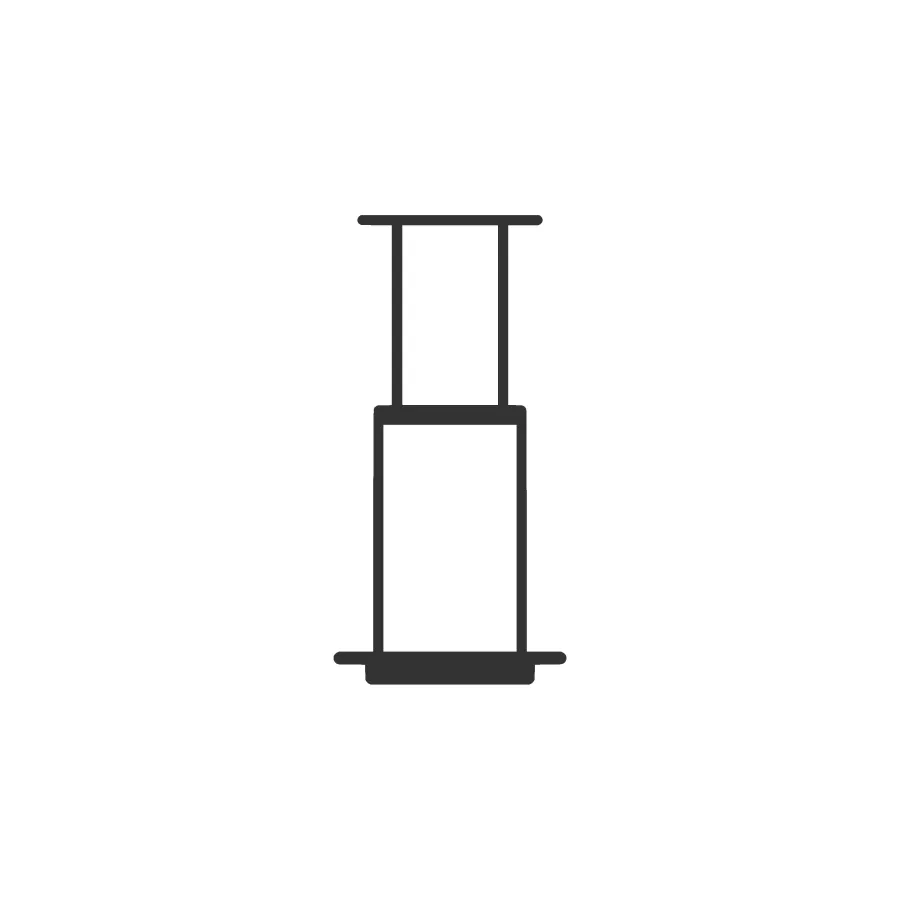
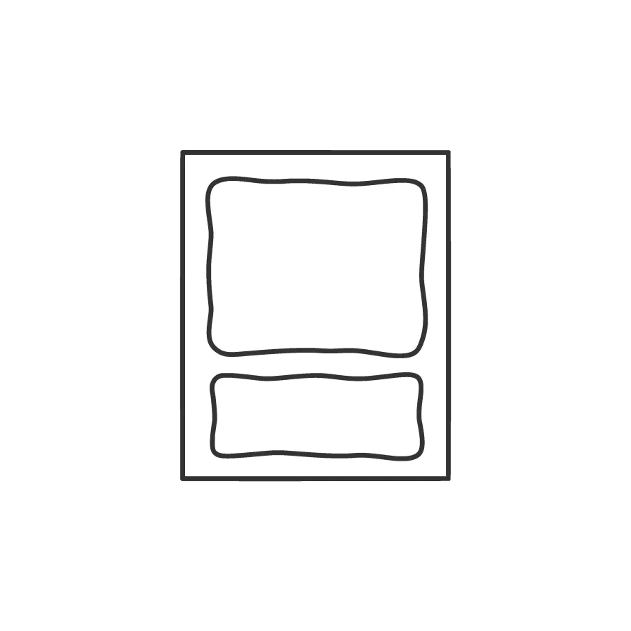
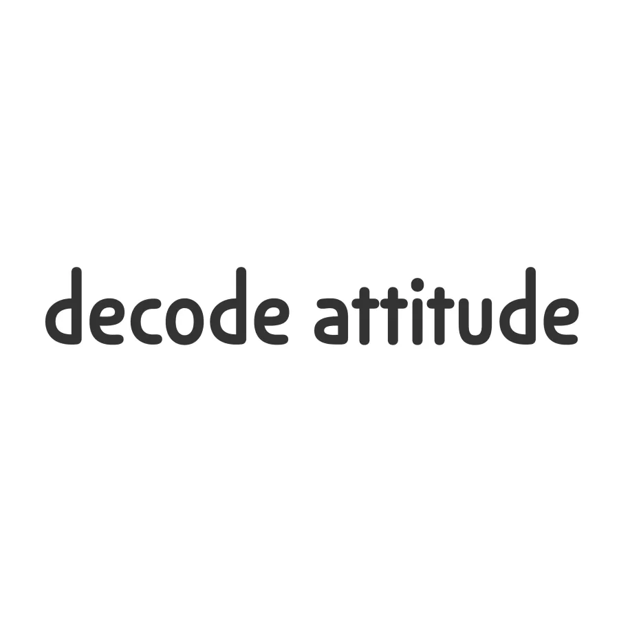
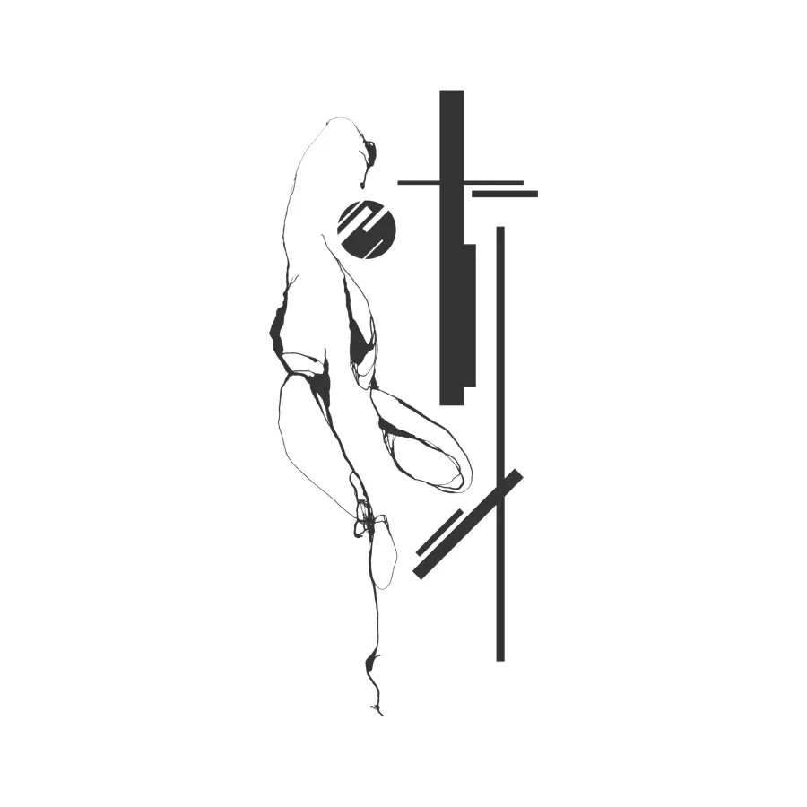
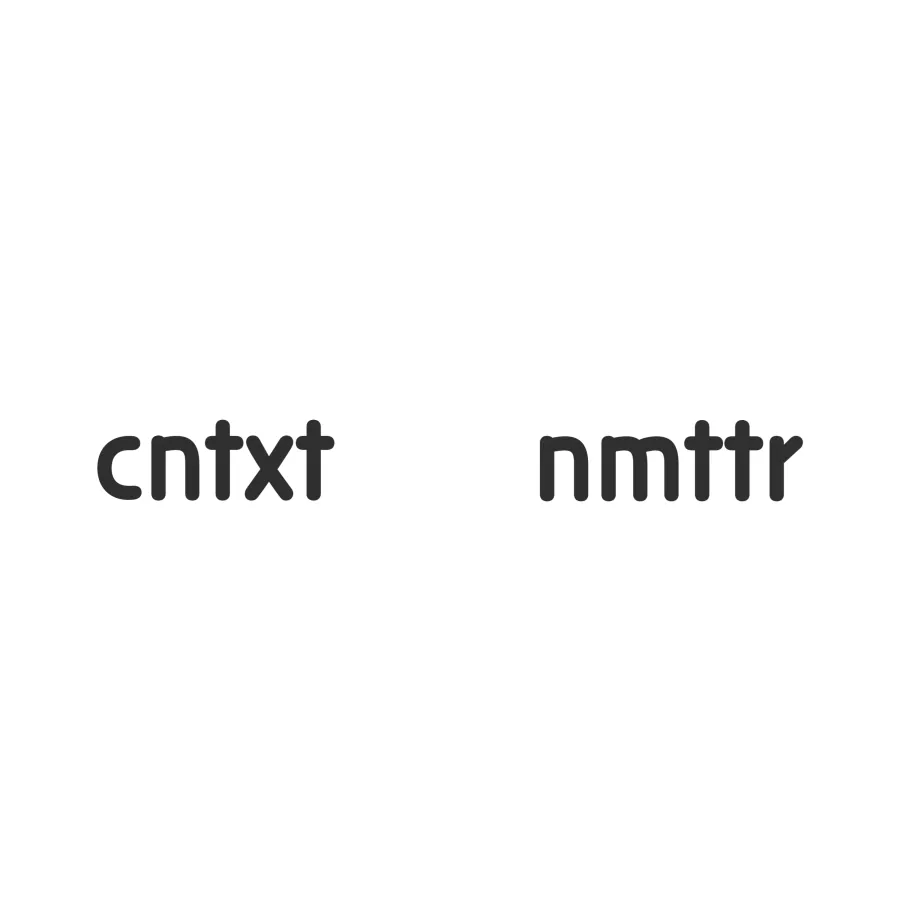

tattoos
The different tattoos that you can find on my body. There is no reason for them to exist apart from satisfying my curiosity, giving me fun and some conversation topics in the future.
-

AeroPress
It's my favorite coffee maker, it's the best coffee maker in the world. I love coffee, I love my AeroPress.
-

Rothko
Rothko has always intrigued me, as an artist and as a person. His paintings arouse a fascination in me that no other artist achieves.
-
dots
Four tiny random dots in my body. They mean absolutely nothing and aren't in special places either.
-
beneath hiraeth
I've been searching for hiraeth all my life. I probably never reach that place because I will be always beneath it.
-

decode attitude
Because this is a constant search for how to live and act.
-

collapse
A deconstruction of natural and artificial structures, an approach to the entropic spectrum.
-

cntxt & nmttr
One side of me tries to get the context of everything. The other side knows that nothing matters.